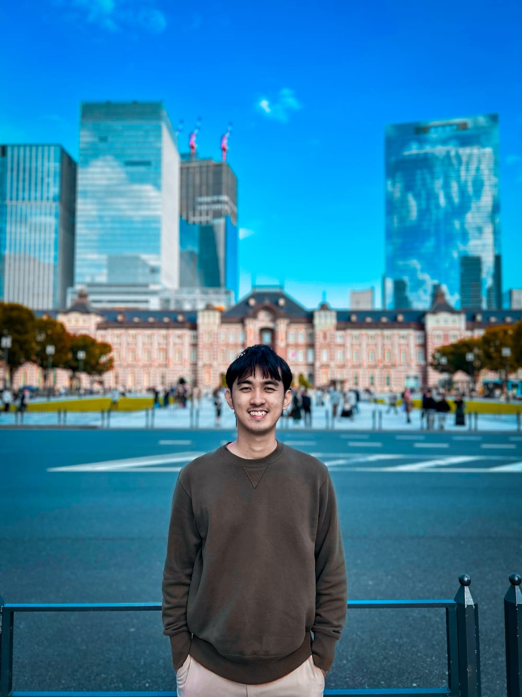

Flexible remote work · Philippine time (UTC+8) · Hilongos, Leyte, Philippines
Jose Laurence Romero
Computer Engineer who gets businesses found on Google, builds web applications, and creates visuals that look good and work well.
I help small businesses get found on Google, run smoother with simple web tools, and look good online.

What are you hiring for?
Pick a path to see the work that matches.
SEO & Marketing
Technical SEO, content strategy and reporting. A client website recorded 11 bookings during my work; their traffic sources are not yet confirmed.
- Technical SEO
- Keyword strategy
- Reporting
Software Developer
Full-stack web apps with React, Laravel and Firebase, including a credit scoring platform built for a rural bank.
- React
- Laravel
- Firebase
Multimedia
Graphic design, video editing and photography: posters, logos, thumbnails, social content and more.
- Graphic design
- Video editing
- Photography
About MeWant to know me more? Click me!
I'm a Computer Engineering graduate from the University of San Carlos, based in Hilongos, Leyte. My work sits in three areas: search engine optimization, full-stack web development, and multimedia (graphic design, video editing and photography).
It started with designing posters and editing videos for local events, and grew into client work for small businesses. I'm self-taught in design, formally trained in engineering, and I like projects where those skills meet.
- Education
- B.S. Computer Engineering, University of San Carlos (July 2026)
- Languages
- English, Filipino, Cebuano, Japanese (a little)
Experience
-
Sept 2026 – Present
SEO Specialist
Prolink Property Support
- Lead AI-assisted keyword and content strategy with GrandRanker, managing a 450+ keyword library.
- Run on-page SEO audits covering meta tags, internal linking and content structure, and improve navigation and UX to strengthen conversion paths.
- Set up Google Search Console, GA4 and Bing Webmaster Tools to track search visibility and site activity.
- Resolved indexing blocks, duplicate-post redirects and broken links, and added structured data.
- Reviewed AI-written posts for repeated text, drafting notes and off-topic content.
- Prepared plain-English monthly reports and used query and page data to identify content opportunities.
-
Mar 2023 – Jun 2023
IT Operations Intern
Concentrix
- Troubleshot hardware and software issues to support daily IT operations.
- Investigated network issues as part of the office's IT support work.
- Configured workstations for daily use.
- Documented IT processes and worked with enterprise IT teams on operational support.
-
Freelance
Freelance Graphic Designer
Small businesses and local events
- Designed digital and print marketing materials for company promotions and announcements.
- Created social media graphics and branding assets aligned with business goals.
- Produced banners, posters and social content for local sports and community events, keeping branding consistent across campaigns by working with organizers.
- Designed business logos using industry-specific imagery, including bicycle components for a bike service and coconut illustrations for a copra business.
- Created travel and outdoor thumbnails that combine destination photography with prominent titles and trip details.
- Designed downhill-race number plates with rider names, race numbers and sponsor logos arranged around a clear event identity.
- Created destination posters that pair outdoor photography with prominent location names and clear typography.
-
Freelance
Freelance Video Editor
Freelance
- Edited long-form videos with a focus on storytelling, arranging scenes and pacing to give the footage a clear progression.
- Used on-screen subtitles to carry the story and add context rather than dubbed narration.
- Created outdoor video edits covering exploration hikes, climbs, point-of-view footage and time-lapse sequences.
- Edited short-form content, including shoe unboxing and UGC videos, alongside longer edits.
-
2019 – 2020
Data Annotation Associate
Remotasks
- Annotated image datasets for machine learning applications.
- Worked with LiDAR datasets as part of data annotation assignments.
- Kept accuracy high while meeting productivity and quality targets, working independently and fully remote.
SEO & Marketing Developer Multimedia
Let's work together
Available any time (Philippine time, UTC+8). Looking for flexible-schedule remote work: I can work at my own pace or fit around an office schedule.
Send a short note about what you need and I'll reply by email.
Phone: +639562913209